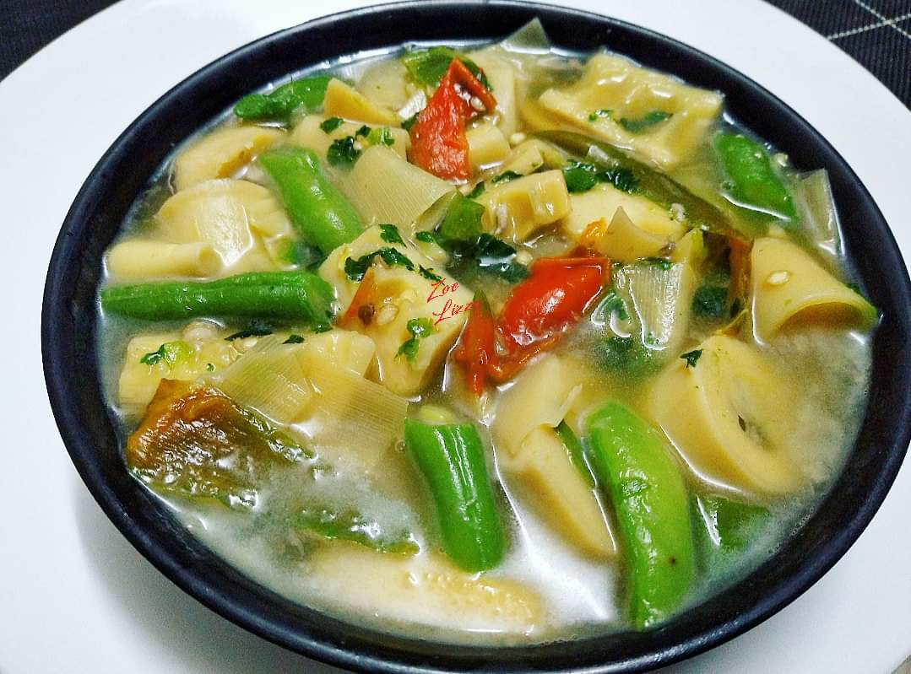

Bai (a Mizo dish) Recipie
Description:

This is a Mizo Ratuai Bai
Ingredients:
- Rice (Mizo buh)
- Food soda
- Salt
- Sa-um (animal oil)
- Leafy vegtables like maian
Steps:
- Boil water until it reaches boiling point.
- Add 1/2 cup of rice
- As the rice begins to get softer, add salt and sa-um and the leafy vegtables
- Put the stove in medium heat
- Stir the mixture slowly so as to not crush everthing
- Wait for around 2 mintues and you are done
Home